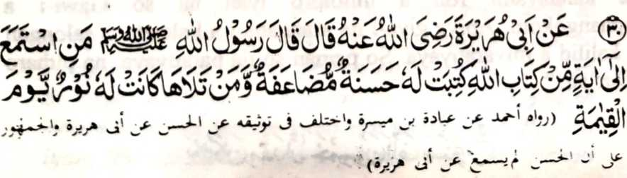

Hadith - 30

Miyakathitayan ko Abu Hurairah (Radhiallaho ‘Anho) a pitharo iyan a pitharo o Rasulollah (Sallallaho ‘Alaihi Wasallam), “Sa tao a mamakineg sa isa bo a Ayaat a ped ko Kitab o Allah na isorat a bagi-an niyan so dowa takep a mapiya go sa tao a batiya-an niyan sekaniyan [a Kitab o Allah] na mapembagi-an niyan so sindao ko Gawi-i a Qiyamat. "
So manga Olama sa Hadith na sasangka a niran angka-iya Hadith pantag ko kiyapo-onan niyan, ogaid na so osayan niyan na miyabager mambo o manga ped a tothol a mitotoro iran a so kapamakinega ko kapembatiya-a ko Qur’an na mala-i balas, taman sa so saba-ad ko manga Olama na pitharo iran a so kapamakineg ko kapembatiya-a ko Qur’an na mala-i balas a di so kapembatiya-a on. So Ibn-e-Mas’ud (Radhiallaho ‘Anho; na piyanothol iyan a miyaka-isa na so Rasulollah (Sallallaho ‘Alaihi Wasallam) na mo-ontod si-i ko mimbar na pitharo iyan non, “Batiya-a ngka raken so Qur’an!” Pitharo o Ibn-e-Masud, “Di raken domada-it o ba ko reka batiya-a so Qur’an sabap sa si-i reka initoron.” Pitharo o Rasulollah (Sallallaho ‘Alaihi Wasallam), “Pekhababaya-an aken so kapamakineg.” Inipagomanon o Ibn-e-Abbas (Radhiallaho ‘Anhoma), soden so kiyabatiya iyan sa Qur’an na miyangatatak so manga lo’ pho-on ko manga mata o Rasulollah (Sallallaho ‘Alaihi Wasallam). Miyaka-isa na so Salim (Radhiallaho ‘Anho), a piyakamaradika a oripen o Huzaifah (Radhiallaho ‘Anho), na pembatiya-an niyan so Qur’an na so Rasulollah (Sallallaho ‘Alaihi Wasallam) na tomitindeg ko obay niyan, na piyamakineg iyan sa da mathay. Miyaka-isa na so Rasulollah (Sallallaho ‘Alaihi Wasallam) na piyamakineg iyan so kapembatiya-a ko Qur’an o Abu Musa Ash’ari (Radhiallaho ‘Anho) na tanto niyan a kiyababaya-an so kabatiya iyan.